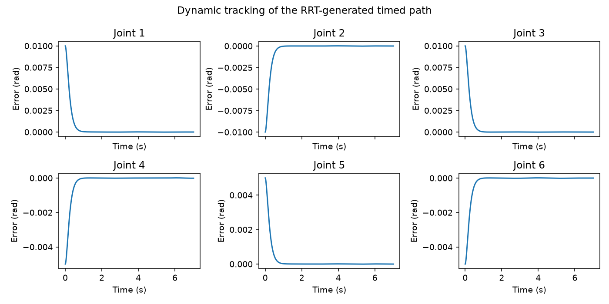
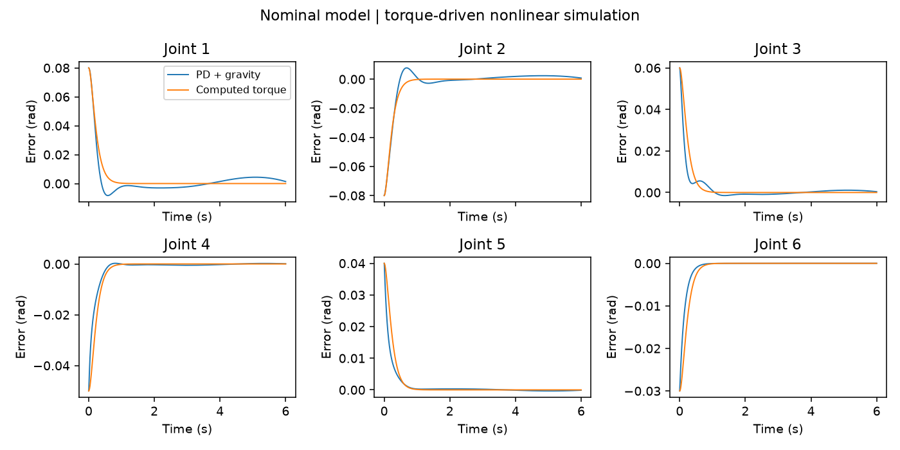
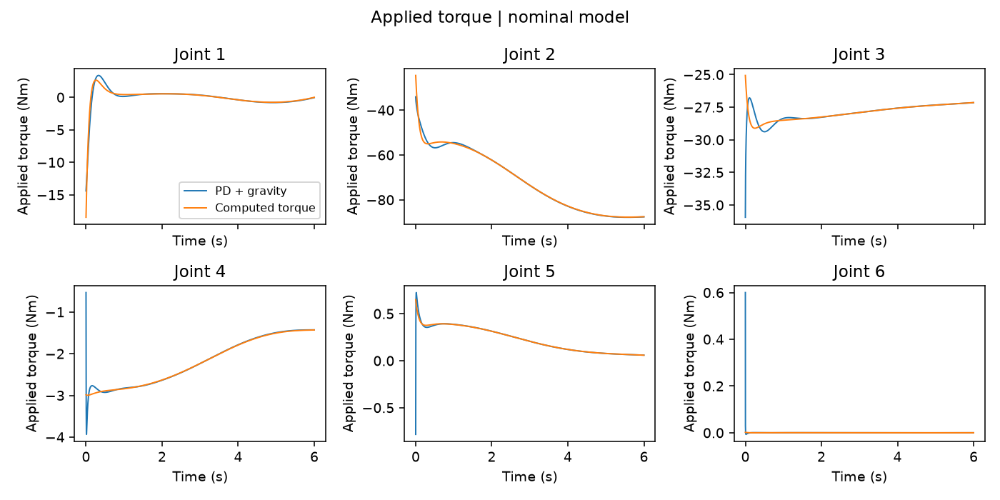
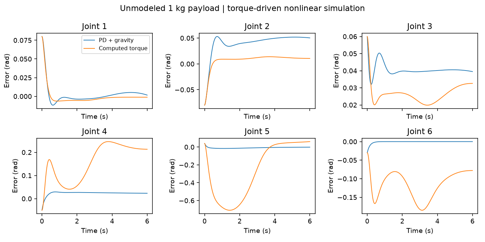

Robotics · Shanghai Jiao Tong University coursework extension
UR16e Motion Planning and Control
Spring 2025
Connect collision-checked RRT paths to smooth joint references and nonlinear torque-driven execution.
- Python
- PyBullet
- NumPy
- SciPy
From an RRT detour to dynamic execution
Use the video controls to play, pause and seek.
0.001179 rad pooled tracking RMS, 18.349 mm minimum sampled clearance over a 7.02 s planned maneuver. Reference and actual motion were checked separately, with no sampled collisions or joint/velocity/applied-torque violations.
The challenge is more than finding a path: interpolation and tracking errors can move a robot outside its planned corridor. This Python pipeline keeps timing on the checked joint-space edges, executes them with a nonlinear controller, then checks the reference and recorded motion independently.
A consistent six-joint robot model
The supplied URDF defines the six revolute joints, inertial properties, visual meshes and collision meshes. Python loads that model directly, resolves its mesh paths and provides forward kinematics, Jacobians, numerical inverse kinematics, rigid-body dynamics and torque-driven simulation.
Frame checks reconcile standard DH with URDF tool0 expressed in the UR controller base frame. That base is rotated 180° around Z from the simulation's base_link. COM positions and inertia tensors are transformed into consistent frames instead of mixing hand-coded tables with URDF values.
Model and implementation settings
Units are metres, radians and Nm. The base is fixed; damping, friction and contact response are disabled during tracking. Obstacles are independently queried for clearance, rather than used to stop an invalid motion. Simulation effort bounds are [330,330,150,56,56,56] Nm. Clearance uses 5 ms state samples, refined joint-space edges and selected nonadjacent self-collision pairs.
Bounded numerical IK replaces the original analytical branch solver. Edge-preserving quintic timing replaces the earlier B-spline timing workflow. MATLAB/Simulink files, symbolic derivation and robust/noise scenarios are retained in the legacy implementation; the executed results use Python.
Obstacle avoidance: plan first, then verify the motion
A joint-space RRT samples configurations, checks each extension along its edge, and connects a detour to the goal. Shortcut smoothing is checked again at finer spacing. Each remaining edge receives a quintic time law with zero velocity and acceleration at its endpoints, so the time parameterization follows the checked geometry instead of cutting corners.
| Seed | Planning time (s) | Raw length (rad) | Smoothed length (rad) |
|---|---|---|---|
| 5170 | 0.133 | 2.6909 | 2.0082 |
| 5171 | 0.394 | 3.3605 | 2.2096 |
| 5172 | 0.116 | 2.7972 | 1.9635 |
All three found paths; the direct edge failed collision checking. Timings exclude smoothing and post-validation. The first seed's timed path was dynamically tracked. At 5 ms state samples, reference and actual minimum clearance were both 18.349 mm over the declared environment/self pairs; refined interval checks also found no collisions.

Scene, collision resolution and limits
Box centre [.635,.570,.482] m, half extents [.055,.055,.070] m; sphere centre [−.25,.50,.30] m, radius .08 m. Planning margin: 15 mm; edge sampling: .04 rad; shortcut checks: .01 rad; final edge validation: .005 rad Euclidean joint distance. Reference and actual states are checked every 5 ms with further interval samples at ≤.005 rad.
Selected nonadjacent link pairs are checked; adjacent/fixed helper pairs are excluded. Collision meshes use the supplied model's representations. Joint position/velocity and applied-torque limits are checked separately. Zero sampled violations do not certify continuous clearance or physical robot safety.
Matched torque-driven controller comparison
A separate six-second joint reference compares PD plus nominal gravity compensation with computed torque on the same nonlinear model. Both start with the same position offset and zero velocity, use the same 0.25 ms timestep, and share actuator bounds. This experiment contains no obstacles.
PD adds joint error feedback to gravity compensation. Computed torque uses nominal inverse dynamics to request desired acceleration plus feedback. Their gain units differ, so matching numerical gain values would not make the controllers equivalent.
| Configuration | Pooled RMS (rad) | Max final joint error (rad) |
|---|---|---|
| PD + gravity, nominal | 0.008643 | 0.001370 |
| Computed torque, nominal | 0.009635 | 0.00000179 |
| PD + gravity, 1 kg mismatch | 0.028008 | 0.050365 |
| Computed torque, 1 kg mismatch | 0.186758 | 0.213234 |
Computed torque achieves a smaller nominal final error, but PD has lower pooled transient RMS in this configuration. Neither controller saturates in these converged runs.

Controller equations, gains and applied torques
PD: τ = Kp(qd−q) + Kd(vd−v) + gnom(q)
CT: τ = IDnom(q,v,ad + 64(qd−q) + 16(vd−v))
PD Kp=[180,180,120,50,30,20] Nm/rad; Kd=[30,35,22,8,5,3] Nm·s/rad. CT gains are acceleration-space gains, fixed across nominal and payload cases. An initial 1 ms stiff-wrist numerical failure and the corrected timestep/convergence checks remain in the report.

What changes with an unmodeled payload?
Add 1 kg and a declared rotational inertia at tool0 while keeping both controllers' nominal models and gains unchanged. The computed-torque pooled RMS increases to 0.186758 rad, with joint-5 peak error about 0.709 rad. PD also degrades, to 0.028008 rad pooled RMS.

The equations, gain conventions, payload application and matched settings were checked, and the Python command reproduced the saved results. The payload test measures model-mismatch sensitivity with the same gains and reference trajectory.
Verification beyond a dynamics round trip
An independent implementation builds mass from COM Jacobians and kinetic energy, gravity from potential-energy derivatives, and velocity terms from mass derivatives. Those quantities are compared with the rigid-body engine, so validation does not rely only on forward/inverse routines sharing the same mistake.
- Maximum independent mass-matrix discrepancy: 6.22e−15; sampled mass matrices are symmetric positive definite.
- Gravity discrepancy: 6.41e−9 Nm; Jacobian finite-difference residual: 1.66e−10.
- Local numerical FK–IK residuals, wrench signs and actual forward-step acceleration are checked.
- Seven tests pass; integrated timestep convergence is checked independently of the older nominal/payload study.
The checks compare model quantities across independently sampled configurations.
About the project
Developed from Shanghai Jiao Tong University Robotics coursework. The Python implementation integrates URDF/frame reconciliation, dynamics corrections, independent checks, planning/control experiments, payload studies and mesh-based visualization. Original MATLAB/Simulink sources are retained in the repository.
Reproduce and inspect the implementation
Linux/WSL Python 3.11, PyBullet, NumPy, SciPy, mesh/rendering dependencies and ffmpeg. The CLI provides kinematics, compare, payload, plan-track, verify and visualize commands. Use fresh output folders; configurations, full trajectories and metrics are exported.
Full reproduction commands · Feature mapping · Detailed dynamics and failure analysis